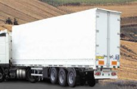
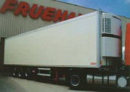
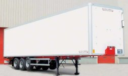
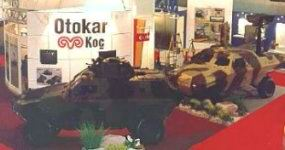
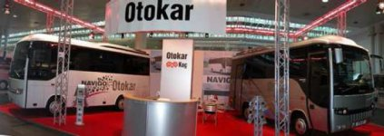
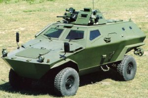
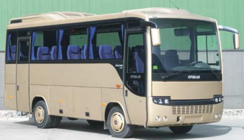
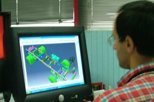
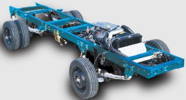
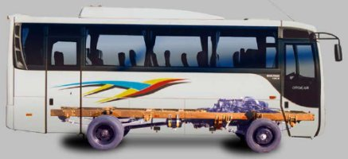

|
Üretimde,
araçlarda "yerli oran" deðil, "yerli þirket,
milli dizayn, yerli dizayn" üzerinde durulmalýdýr. Örnek
olarak; bugün Ýsrail askeri alanda çok geliþmiþtir fakat mamülün
detayýna inildiðinde birtakým parçalarýn yurt dýþýndan çeþitli
yerlerden alýndýðýný, esasýnda Ýsrail' in malý olmadýðý görülür.
Fakat mamülün kendisi ve endüstriyel tasarým haklarý Ýsrail
þirketine aittir ve o da bu malý istediði yere satabilir.
Otokar
zýrhlý araçlarýnda da yýlda yapýlan 100 tane zýrhlý aracýn
her þeyiyle yerli olmasý mümkün deðildir; fakat bu araçlarýn
tüm haklarý yani; halk arasýndaki tabir ile "anahtarý"
Otokar'dadýr. Neticede Otokar, zýrhlý aracý kendisi dizayn
etmekte, istediði yerden istediði parçayý alarak, Otokar dizayný
bir araç yapmaktadýr. Burada mühim olan nokta; entegrasyon
gücü, entegrasyon mühendisliði ve aracý ortaya çýkarmaktaki
kabiliyettir.
|

|

|

|
|
1984,
Fruehauf lisansý ile imalat
|
1990,
soðutuculu araçlar ve benzeri kendi dizayný üniteler
|
2005:
Otokar markasý ile de üretim planlanýyor
|
Treyler
ve semi-treyler ürünü de lisans altýnda üretilmeye baþlanmýþ;
sonrasýnda bir yandan lisans altýnda üretim yapýlýrken, þirket
kendi özel soðutuculu araçlarý ve benzeri sert gövdeli araçlarý
geliþtirmiþtir.
Otokar,
2005 yýlýnda "Otokar" markasý ve lisans markasýyla
paralel bir þekilde, kendi ürünlerinin imalatýný planlamaktadýr.
Son 20 yýlda Otokar'da ortaya çýkarýlmaya çalýþýlan konsept
þudur; "Lisans ile baþlayýp kendi teknolojisini geliþtirerek,
mühendisliðini geliþtirerek þirketi endüstriyel tasarým haklarýna
sahip olan bir konuma getirmek." Otokar, bunu baþarmýþtýr.
Otokar'ýn
en önemli varlýklarýndan ve hedeflerinden bir tanesi þudur:
"Otokar, fikri mülkiyet haklarýna sahip olan bir þirket
olarak ve özellikle -askeri iþlerin de biraz etkisiyle- milli
varlýðýný, milli kiþiliðini koruyarak devam edecektir."
|

|

|
|
Otokar
IDEX 2001 Fuarý'nda
|
Otokar
2004 Hannover Fuarý'nda
|
|  |
|
COBRA
Taktik Zýhrlý Araç: TÜBÝTAK-MAM desteðiyle 1996'da tasarýma
baþlanarak 14 ay içinde ilk prototip üretilmiþtir. Aktarma
organlarý dýþ kaynaklýdýr.
|
Yan
sanayi ile iþbirliði konusunda bazý açýklamalarda bulunmak
gereklidir. Askeri iþlerde yan sanayiyle çok detaylý projeler
yapýlamamaktadýr. Bu, iþin gizliliðinden deðil, iþin kendisinden
kaynaklanmaktadýr.
Örneðin;
TÜBÝTAK-MAM destekli bir proje olan bir zýrhlý araç projesinde
sadece soðutma sistemi yan sanayiyle ortak geliþtirilmiþ,
farklý bir geliþtirme yapýlamamýþtýr. Çok baþarýlý sonuçlar
alýnan bir proje olmuþtur, ancak yan sanayi yönüyle bakýldýðýnda
o kadar güçlü bir örnek deðildir. Ayný þekilde Otokar minibüsleri,
sadece ülke için geliþtirilmiþ, esasýnda çok baþarýlý, ancak
Avrupa için geçerli olmayan bir dizayndadýr. Bu alanda Otokar'ýn
endüstriyel tasarým haklarý çok ihlal edildiði için, araçlar
kapalý bir kutu içinde, mümkün olduðu kadar Otokar tarafýndan
yapýlmaktadýr.
Ancak,
askeri araçlarýn ve minibüsün aksine "Sultan" midibüsler,
yan sanayiyle çok sýký bir iþbirliðinde ve eþ zamanlý geliþtirmelerle
yapmaya çalýþýlan bir projedir. "Sultan"da birçok
sistem yan sanayiyle, yan sanayinin de yatýrým yapmasýyla
beraber geliþtirilmiþtir.

Sultan'ýn
tasarým sürecinde bir iki tane nokta önemlidir. Otokar, eski
bir otobüsçü olarak yeni bir araç yapmaya baþlamadan önce
rakip araçlarý incelemiþ, onlarýn zayýf yönlerini bularak
kendisi için bir artý yöne çevirmeye çalýþmýþtýr, böylece
Sultan'ýn özellikleri ortaya çýkmýþtýr.
|  |
 |
|
Pazardaki
kamyon þasisi üzerine otobüs gövdesi uygulamasý yapýlan
ürünlerin dezavantajlarýný ortadan kaldýrmak için projeye,
ürüne uygun bir otobüs þasisi tasarlanarak baþlanmýþtýr
|

En
önemli konu; Otokar, kamyondan bozma bir vasýta deðil; bir
"otobüs" yapmak isteði ile yola çýkmýþtýr. Bu, Otokar'ýn
mühendislik olarak birinci hareket noktasý olmuþtur. Bu istek,
yan sanayi ile paylaþýlmýþ; sonuç olarak konfor ve estetik
olarak da otobüs gibi bir araç ortaya çýkmýþtýr.
Sonrasýnda
eþ zamanlý tasarýmlar baþlamýþtýr. Hem yan sanayiden hem ana
sanayiden bu programlar hakkýnda konferans sýrasýnda verilen
örnekler, ayný þekilde Otokar'da da uygulanmaktadýr.
Burada,
tasarým süreçlerinin detaylarýný anlatmak yerine; birkaç tane
problemden bahsetmek doðru olacaktýr. Bunlardan bir tanesi;
regülasyonlara göre araçlarýn ülkede geliþtirilmesinde çok
ciddi sorunlar, zaman kaybý ve parasal kayýplarýn olmasýdýr.
Ortak bir test pisti bulunmamaktadýr. Bu, Otokar için en önemli
konulardan bir tanesi olmuþ ve projede tahmin edilemeyen birtakým
gecikmelere de neden olmuþtur.
Endüstriyel
tasarým haklarý hedefi olan milli þirketler olacaksa, ileride
test imkanlarý geliþtirilmelidir. Otobüslerde; otomobillerin
aksine; her ülkenin kendine ait bir regülasyon sistemi mevcuttur.
Bu nedenle, toplu taþýmacýlýk araçlarýnda test ve regülasyonlara
uyum, çok vakit alýcý ve büyük yatýrýmlara giden bir yoldur.
Tek þirketin bunu yapmasý mümkün deðildir; Bu, muhakkak yan
sanayiyi de dahil edilerek gerçekleþtirilmelidir.
Sistemlerin
üzerinden gidilirse, "Sultan"ýn geliþtirilmesinde
koltuklar, aydýnlatma ve yolcu kumanda sistemleri, havalandýrma
ve daðýtým sistemi, süspansiyon, "air condition"
sistemi, sessizlik paketi ve fren sistemleri gibi alanlar
yan sanayi iþbirlikleriyle yapýlmýþtýr.
Esasýnda
büyük bir problem olmamakla beraber, iþin baþka bir boyutu
daha bulunmaktadýr; gizlilik kolay kolay saðlanamamaktadýr.
Ancak, 2 yýl sonra yapýlacak araçlarýn paylaþýldýðý bir ortam
olduðu için çok ciddi bir sorun deðildir. Adetler az olduðu
için birtakým özgün dizaynlarýn daha iyilerinin de geniþ kullanýma
geçmesi mümkün olabilmektedir; ki ortak yatýrým yapýldýðý
için bu ciddi bir problem olarak görülmemelidir. Ufak tefek
teknolojiler geliþtiriliyorsa iki taraf da bunu kullanmalýdýr.
Bunun haricinde yan sanayiyle "Sultan" aracýnýn
geliþtirilmesinde çok baþarýlý bir dönem geçirilmiþtir.
Burada
yan sanayi ile iliþkilerde paylaþmasý gereken iki konu daha
bulunmaktadýr. Özellikle Tofaþ ve Ford Otosan, sonra da onu
takip eden þirketlerde görülmektedir ki; Türkiye bir milyar
dolarlýk ihracatlar ve yüz binleri aþan ihracatlar dönemine
girmiþtir. 1975'lerde Ford Otosan'da jantsýz, lastiksiz araba
satýlabilen dönemlerden inanýlmaz güzel bir noktaya gelinmiþtir.
Fakat bunun Otokar gibi daha farklý bir arenada mücadele veren
þirketlere de bazý etkileri bulunmaktadýr ve bunlarýn özellikle
yan sanayi yönüyle çok önemli bir iki tanesinden burada bahsetmek
gerekir.
Adetler
yükselince Otokar gibi yüz binler deðil on binler, belki biraz
daha az adetlerde olan firmalarýn yan sanayiyle olan iliþkilerinde,
gayet normal olarak birtakým sürtüþmeler olabilmektedir. 10-15
yýl sonra Türkiye'ye teknoloji sayesinde para kazandýrabilecek
varlýklar yaratabilmek için bunlar olmamalýdýr. Bu konunun
yan sanayi tarafýndan anlaþýlmasý ve desteklenmesi beklenmektedir.
Kaçýnýlmaz
ve hakim olunmasý çok zor olan bir diðer noktada da yan sanayinin
kabuk deðiþtirmesidir. Yan sanayi, yabancý firmalar tarafýndan
satýn alýndýðýnda; birdenbire yabancý firma kurallarý ön plana
çýkmakta ve bu kesinlikle rekabet ortamýnda sektöre artý etki
yaratmamaktadýr.
Eðer
hedef, otomotiv sanayinde teknoloji yaratan bir ülke olmak
ise; bu iki negatif geliþmeye ileride çok dikkat etmek gereklidir.
Otokar,
motor vb. malzemeleri yapmasa da "Sultan" aracýnda
çok iyi bir entegrasyon yapmýþtýr. Ancak, Türk otomotiv sektörü
çok büyük bir hýzla büyüdüðü için teknik eleman, tecrübeli
eleman sýkýntýsý ile karþýlaþýlmýþtýr. Test ekipman eksiklikleri
de Otokar'ý en çok üzen ve zorlayan bir konu olmuþtur. Otokar,
2003 sonunda bir karar alarak, bu eksikliði en azýndan belirli
aþamalarda gidermek için çalýþmalara baþlamýþtýr. Yine TÜBÝTAK-MAM
destekli bir proje ile en azýndan yol testleri ve simülasyonlarýný
giderebilecek, Otokar'ýn proje hazýrlama ve yeni araç devreye
sokma hýzýný artýracak bir sistem alýnmaktadýr. Türkiye'nin
en büyük sistemi olacak bu sistem, önümüzdeki sene devreye
girecek ve tüm otomotiv sanayinin de hizmetinde olacaktýr.
|